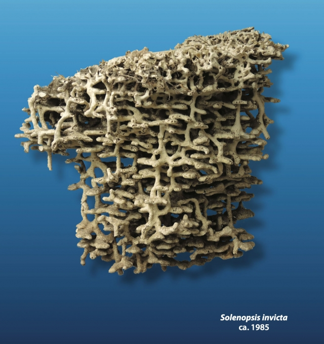
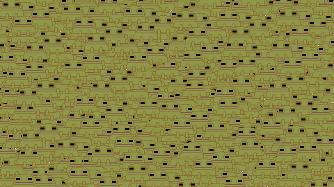
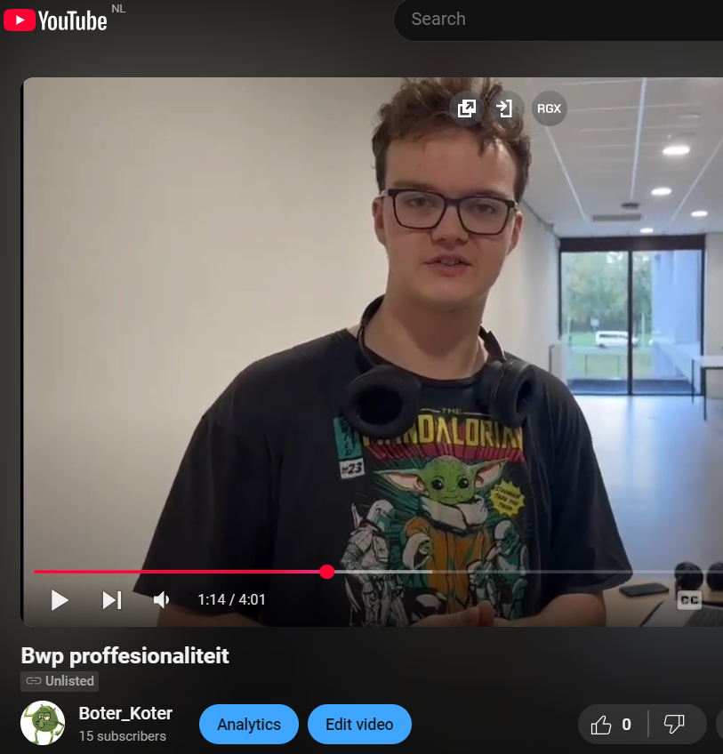

Hallo ik ben Sven van der Meij, dit is mijn portfolio. Ik heb deze website gemaakt als een soort mieren nest, hoe dieper je blijft graven, hoe meer je zal vinden, met elke pagina die je ziet zijn er links die je kan openen om verder te graven. Ik begrijp natuurlijk dat niet iedereen dat wilt doen, je zal daar niet de tijd of het geduld voor hebben en dat begrijp ik, daarom staat bovenaan de pagina de harde kern van: "About me", "Contact" en "Projecten". Ik hoop dat je de tijd zal nemen om te blijven graven, hier is zijn een paar startpunten.
-

Frog tower defense
-

Java script
-

video editing